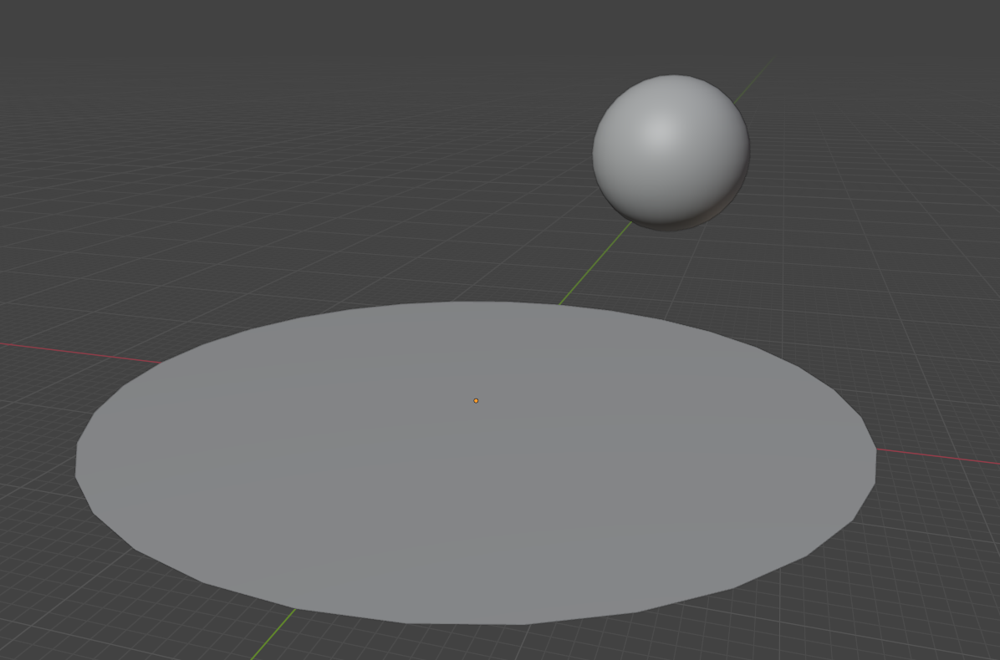

Илсэт
Илcэ́т (лл. илсэт - "остров") - гигантская платформа, на которой располагается океаны и континенты, а также всё что на них и в них. Единственное известное тело во Вселенной, на которой есть жизнь.
Илсэт статична, в пределах своей системы и находится в её центре. Тем не менее сама система движется в пространстве, вокруг галактики и с галактикой во вселенной. Вокруг Илсэт, под углом в 24°, вращаются две звезды Эраис и Митис, два спутника Юнаис и Нимис, а также ряд более мелких астероидов образующие тонкое и едва различимое кольцо вокруг платформы, и ряд астероидов на вытянутой орбите.
Физические характеристики
Средние значения:
Окружность 160 000 км
Площадь 2 040 000 000 км
Толщина - 80 км
Что примерно в 2 раза больше чем диаметр, в 4 раза больше чем окружность и в 4 раза больше чем площадь Земли1.
Сравнение Илсэт и Земли:
Строение
Илсэт, будучи плоской платформой, не имеет мантии и литосферных плит, а является цельным куском камня. При толщине в 80 километров она может позволить себе иметь на своей поверхности моря и океаны, ущелья и разломы, возвышенности и гигантские горы.
Внутри Илсэт пронизана сетью невероятно длинных пещер, туннелей, разломов, и часто присутствуют огромные пустоты, пространства. В некоторых из них есть жизнь.
Края Илсэт, по всей окружности, на протяжении сотни километров поднимаются от морского дна, до поверхности воды, и у самого края резко переходят в высокие горы. За горами следует обрывы, которые являются торцом платформы. За горами начинают дуть сильные, ураганные ветра, которые дуют со скоростью около 1000 км/ч. Эти ветра дуют по часовой стрелке, всегда в одном направлении и не дают атмосфере Илсэт улетучится. По всей площади, её удерживает гравитация, а по краям бешенные ветра.
С низу, то есть на другой стороне платформы ничего нет, голый камень, возвышенности и низменности, разломы и прочее. Известно, что с обратной стороны тоже есть воздух, и даже дуют ветра. Последние медленно образуют пески.
Гравитация
Присутствует два независимы и взаимодействующих источника гравитации.
Первый - точечный, который заставляет вращаться вокруг себя и платформы звёзды, спутники и другие объекты. При этом, на саму платформу он не оказывает гравитационного влияния. Область его действия начинается примерно за 60 000 километров.
Второй - дисковой, который удерживает то что находится непосредственно на самой платформе, воду, воздух, почву и её обитателей. Область его действия распространяется и заканчивается у краёв платформы, примерно за 51 000 км. Сам "диск" располагается не симметрично, и слегка опущен вниз, относительно поверхности, на глубине в 50 км от поверхности и 30 км от обратной стороны. На этой глубине, есть область с нулевой гравитацией.
Факты
• Первая платформа Илсэт, которую создали Двое тут же рухнула под собственной массой и сформировала планетоид. Тогда, Каст дал им азбантиум - невозможный минерал, в 400 раз прочнее алмаза и Двое построили из него каркас на который наложили новую платформу. Остатки старой платформы были использованы для создания новой, стали частью двух спутников Илсэт и даже частично сформировали кольцо вокруг платформы, а также стали кометами.
Сноски:
1 У Земли диаметр - 12 756 км, окружность - 40 040 км, площадь - 510 072 000 км²